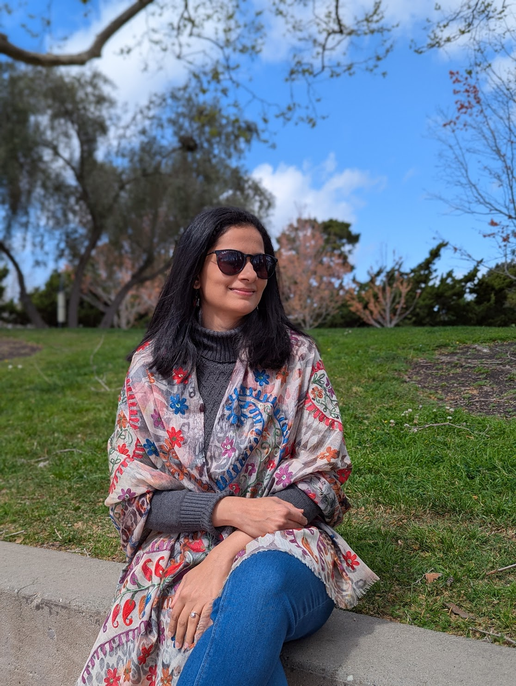
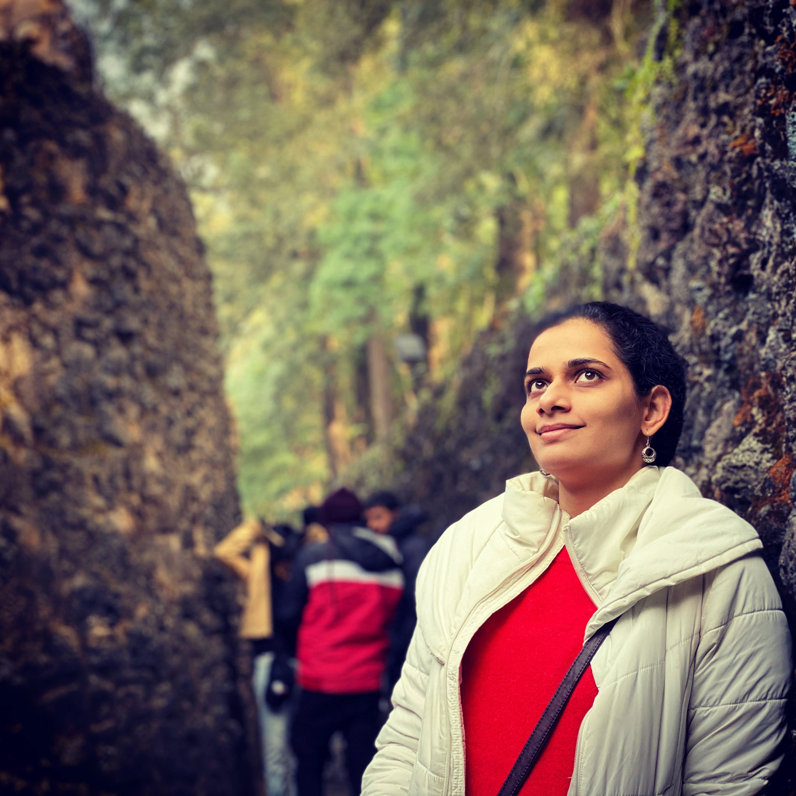
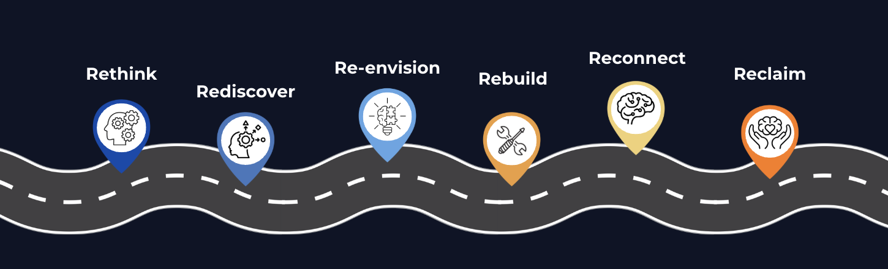
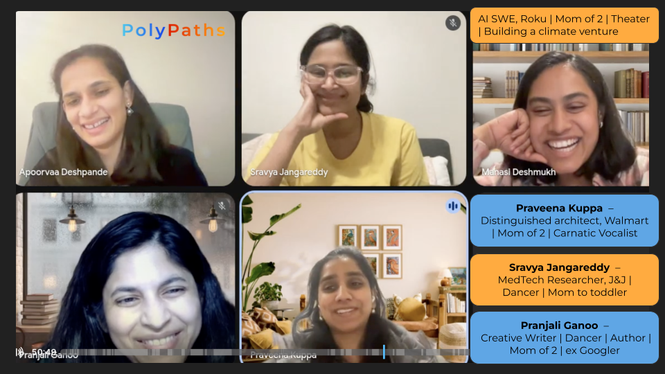
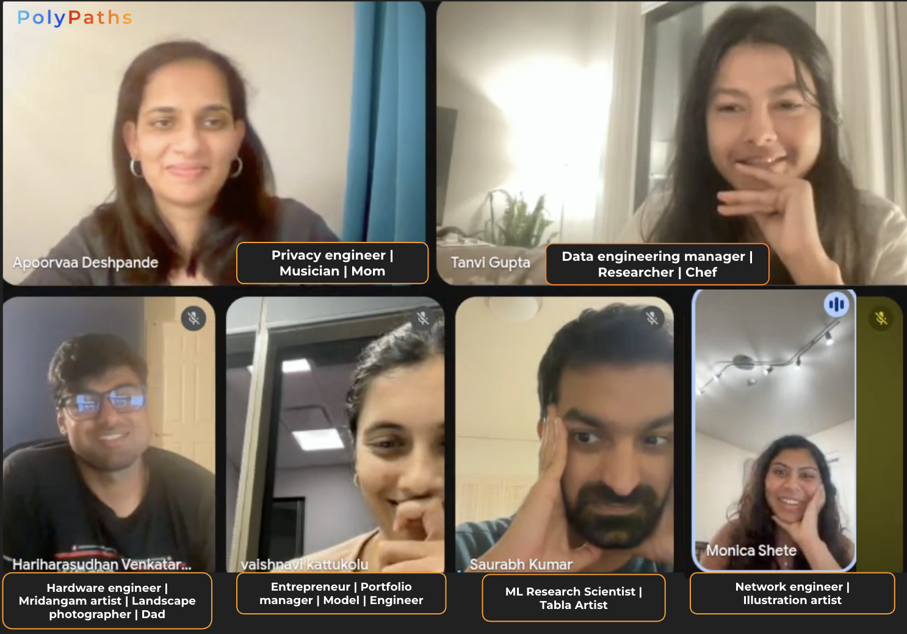
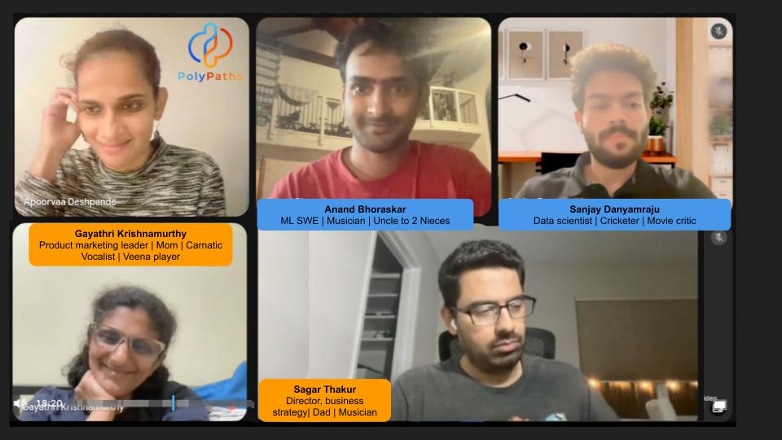

For the ambitious and creative mom who is tired of surviving and ready to thrive
A 6 Week Curated Cohort to Reset Your Life to Be Vibrantly Multifaceted
Imagine a life where your career, your creative callings, your curiosity, and your relationships together have room to thrive. A life where you no longer feel torn between your “main thing” and the other pursuits that light you up. This is the promise of a PolyPath lifestyle i.e. living as your fullest, most authentic self without leaving parts of you behind.
You find yourself spending most of your energy on urgent tasks. You are exhausted by the end of the day, and your art gets only your leftover energy.
Your job is important to you, but doesn't define you. You want to build a life around everything that brings you joy.
You don't know other creative techies who also treat their art as a serious calling, leaving you without the peer support you need to integrate both worlds.

Hi! I am Apoorvaa Deshpande. Growing up in a musical family in Mumbai, music was always central to my identity whether it was performing or composing. I also always loved mathematics which took me on a journey to an undergraduate degree in Math + Computer Science, and then to an Ivy League PhD program in Computer Science.
In 2018, when I paused my music to focus solely on my PhD, I thought I was doing “what it takes!”. But my research didn’t get better, and my creative spark slowly disappeared. Even though I graduated successfully, I left with a feeling of emptiness and fragmentation. I learned the hard way that suppressing a core part of my identity is not the solution!
I then made it my a mission to uncover a better and vibrant way of living. I found several examples of prolific professionals who are also stellar artists and truly present parents. I observed that they don't compartmentalize, but strategically integrate their diverse interests into a coherent whole.
Over the years, a magnificent multifaceted life became my obsession. It has been a transformative journey of self-reflection and self-discovery. I have been learning from the greats, experimenting with my life, and relentlessly iterating what works.
Today I live a vibrant and intentional life where all parts of me thrive. I am a Tech Lead at Google, a performing musician, a somewhat caffeinated mom of two boys :D, a writer and now an entrepreneur.
What I missed most in this journey was a community and a dedicated space to discuss challenges in a multifaceted journey. That's why I developed the PolyPath Reset, a unique cohort program specifically designed for creative tech professionals – to design your life holistically, with an intimate group that truly gets it!


Uncover limiting beliefs around success, ambition and what it takes to thrive.
Learn a holistic framework to capture every meaningful aspect of your life.
Create a clear vision of your ideal integrated life with concrete, actionable goals.
Develop personalized systems and tools to bridge the gap between your current reality and ideal life.
Identify your diverse superpowers and discover connections between your interests.
Learn to effectively communicate and leverage your unique strengths.
Each 90 minute session is structured to cover the topic in depth paired with reflection exercises that drive it home for you. The session includes an open discussion with your cohort, all of whom are on a similar journey as you. I have seen participants form lasting friendships through these cohorts.
More time to actually do the things that light you up
Clarity on your ideal life and the tools to get there
Courage to be unapologetically you
"Before this cohort, I rarely gave myself the space to pause and reflect on where my energy was actually going. Six weeks of the cohort was a true investment in myself, allowing me to clear the noise and tune into my own personality traits. The exercises helped me gain clarity on why certain things are working in my life and where I need to focus next. Additionally, our unfiltered and empowering conversations helped me realize I am not alone in these challenges. This experience has shown me how to prioritize my multifaceted life more effectively."
"Connecting with other multifaceted moms in the exact same boat was incredibly validating, and the frameworks are what truly rewired my thinking. But the biggest turning point for me was the ‘2030 Path Pie’ exercise; it gave me such a profound reality check about what I genuinely want from life that I decided I couldn't wait until 2030 to make it happen. It gave me the conviction to take a leap of faith, to leave my tech job at Google, and step fully into my other passions. If you are feeling misaligned in your career and need the courage and systems to design a life that actually fits you, you need to be in this room."
"I was drawn to this program because I was questioning my inclination and ability to pursue my many interests. I'm walking away with renewed confidence that these pursuits are core to who I am. The systematic approach and structure of the course truly stood out to me. The exercises helped me deeply reflect on my goals and identify the roadblocks in my head. My biggest takeaway is that there is a way to organize and achieve all my interests. This is exactly what you need if you're a multifaceted achiever who wants to stop questioning your passions and start thriving with them!"
"When I first came across Apoorvaa's Substack, it really made me stop in my tracks. I was hooked on to the the idea that you can excel at multiple things, especially given that I grew up thinking that we need to 'specialize in one thing'; so I decided to sign up for the cohort. The cohort session used to be the best, most energizing hour of my week. The program helped me to challenge my core beliefs and truly evolve, moving past what was stopping me and getting to the actionable next step. I would recommend this to anyone who has struggled with expressing themselves in different ways, and are looking for the right approach and community to embrace their diverse pursuits!"
"I never would have carved out the time to question my own deeply held beliefs if it weren't for this cohort. One of the biggest revelations for me was getting a reality check through the PATH exercises and how to execute on my creative pursuits. Mapping out my 2030 vision completely shifted my perspective on how my different interests influence one another. This is a brilliant experience for any multifaceted individual who wants to stop just dreaming about a vibrant life and actually build the mental frameworks to live it."
"I want to give a big shout out to Apoorvaa for building this program. It's truly amazing the thought that she has put in to help aspiring or currently PolyPaths connect and grow. I knew walking into it there would be a lot of value, but the program absolutely exceeded my expectations. To me, it's definitely made me reflect deeper as to who I am and given me the discipline and the tools to be intentional in my life, assess myself, and grow. I know this is an evolving thing, so I will keep coming back to the tools and frameworks from the program, and I am excited to walk my 'path to polypath.'"
"It was a truly valuable experience getting to know like-minded folks and finding a community rooted in exploring a multifaceted life. I found the tools to be very helpful in organizing my goals and managing all my interests without getting overwhelmed. The impact of the exercises will definitely last beyond the duration of the workshop and I recommend it as a stepping stone to anyone looking to explore the polypath life!"
"I was attracted to this program because of its unique design for folks like me. The workbooks and exercises were very helpful in thinking about my life in a more holistic way. The group created a supportive space for open and honest discussions about our struggles. The program helped me be more intentional about time allocation and identifying precise goals for each of my paths. This cohort is for anyone who wants to be more intentional about juggling all of their passions."
"When I heard Apoorvaa's talk, I immediately connected with the PolyPath approach and knew that this program was a must-do for me. The sessions were incredibly insightful and really exercised my brain. I especially loved the visual frameworks we used to get a clear picture of where I am and where I want to go. Hearing from others in different phases of life gave me so much hope for the future. I now have the tools to focus my energy and reduce the resistance I feel when pursuing my goals. I would recommend this to anyone who is a high-achiever and wants to find a way to integrate all their different passions, especially as they navigate the different phases of life."
"Hearing how other creative tech moms navigate similar challenges and the connections has a lasting impact on me. I realized that my med-tech career, motherhood, and passion for dance are all vital expressions of my 'distributed identity.' The cohort's frameworks helped me stop overthinking the 'mindless chores' and actually execute on the things that make me feel fulfilled, like finally joining the Kuchipudi dance class. I learned tools to make time for what I want by being intentional."
"When Apoorvaa first told me about this cohort, I was immediately sold on the concept; I was looking to design a life that integrates my tech and music and the cohort helped me do exactly that. I loved the frameworks and analogies in each session. The visual tools especially stood out to me, and they made it seamless to do the exercises. The discussions with my cohort were super interesting, I especially remember the Rebuild session where my fellow participant's challenges were completely relatable and applicable for me! Overall, I learnt a lot from the cohort and I will definitely apply it to my day-to-day going forward."
"One of my main learnings was realizing the fundamental philosophy and value of why I pursue the things I do. I learnt many helpful mindset shifts to think about my life differently. With the tools and frameworks that we discussed, I feel more equipped to handle all my paths. Plus, I felt really connected across my different paths, and ultimately to who I am!"



Tentative cohorts for 2026:
I look forward to meeting you soon in an upcoming cohort.
Till then and always, be your magnificent multifaceted self!